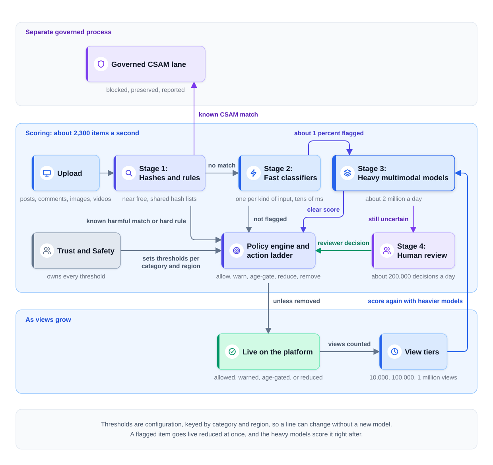
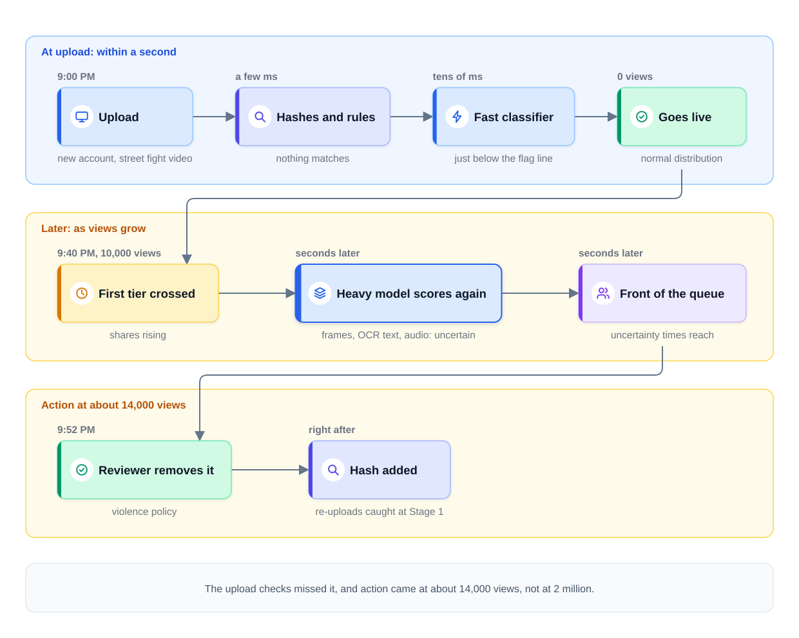
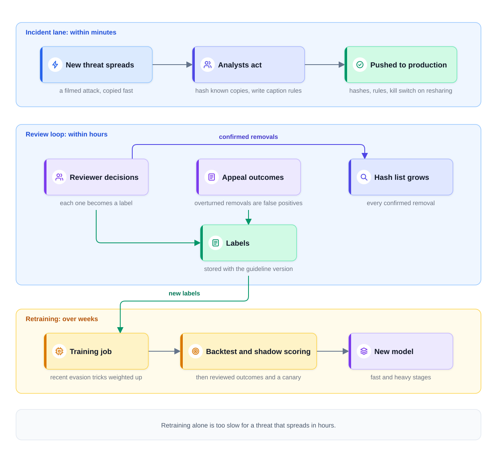

0% completed
System Design of Harmful Content at Platform Scale
On This Page
Know the Vocabulary
The Question
The Recognition Move
What This Case Study Is Not
Part 1: Frame the Problem (minutes 0 to 3)
Policy First
The Scope
CSAM Gets Its Own Lane
Part 2: Define Success (minutes 3 to 8)
The North Star
The Guardrail in the Other Direction
The Latency That Matters
The Scale
Part 3: Map the Data (minutes 8 to 13)
Three Label Feeds, Precious and Adversarial
Why Appeals Are a Data Asset
Why Reports Are Weighted
The Evasion Catalog Forces Multimodal Features
Part 4: Pick the Model (minutes 13 to 18)
The Baseline
The Funnel at Platform Scale
The Arithmetic
The Upgrade Path
Part 5: Design the Serving Path (minutes 18 to 30)
The Diagram
When Each Stage Runs
The Action Ladder and Who Owns It
The Review Queue
Reach-Aware Re-Scoring: The Viral Defense
Follow One Video
When a Stage Fails
Part 6: Keep It Working (minutes 30 to 38)
Three Speeds of Defense
Promoting a New Model
Watch for Attacks
Policy Changes Trigger a Re-Scan
Moderator Well-Being Is a Design Input
Part 7: Count the Costs (minutes 38 to 43)
The Failure Ledger
The Cost Ledger: Machines
The Cost Ledger: People
Part 8: The Interviewer's Follow-Ups
Part 9: What Each Level Sounds Like
Part 10: Same Skeleton, Different Skin
Common Mistakes
Mistake 1: Measuring Uploads Instead of Views
Mistake 2: Scoring CSAM Like Everything Else
Mistake 3: Trusting Reports as Verdicts
Mistake 4: Relying on Retraining Alone
Mistake 5: Letting the Model Team Own the Thresholds
Mistake 6: Treating Reviewers as Unlimited
FAQs
Key Takeaways
Check Your Understanding
Know the Vocabulary
This lesson uses the terms below many times. Read them once now, and come back here when a later section needs one.
- Harmful content: Content that breaks a platform's rules, such as harassment, graphic violence, or scams. This lesson also calls it violating content.
- Policy category: One named group of rules in the platform's written policy, such as harassment or violent extremism. Each category is measured and tuned on its own.
- Trust and Safety: The team that writes the content policy and decides how it is enforced.
- Adversary: A person who studies the system and changes their behavior to get past it.
- Risk funnel: A chain of checks in which each stage costs more per item and sees fewer items. Each stage sends on only the items that still look risky.
- Flag rate: The share of items that one stage marks as suspicious and sends onward for a deeper check. The Module 3 lesson called this the pass rate.
- Perceptual hash: A short fingerprint of an image or a video that still matches after small edits, such as resizing.
- Multimodal: Content that arrives as several kinds of input together. An example is a video with a caption, spoken words, and text drawn on the frames.
- Recognition move: Saying, in the first minutes, which known system the question is, and what changes this time.
- Exit criterion: The short sentence you say out loud to close one step before you start the next.
- Prevalence: The share of content views that land on violating content.
- Confidence interval: The range in which the true value probably lies, when a number is estimated from a sample. It is the error bar around the estimate.
- Time-to-action: How long harmful content stays up before the system acts on it. This lesson counts it in views, not in seconds.
- Reach: How many people have seen an item, or are likely to see it soon.
- Action ladder: The set of actions the system can take on an item, from leaving it alone to removing it.
- Appeal: A request from a user to look again at a decision against their content.
- Reporter reputation: A score for each user who reports content, based on how often their past reports were upheld by reviewers.
- CSAM: Child sexual abuse material. It is illegal almost everywhere, and the law sets how platforms must handle it.
- Incident lane: A fast path that lets the team push new hashes, rules, and switches into production within minutes, without retraining any model.
- Kill switch: A setting that turns off one feature at once, without a new deploy, such as resharing for one video.
The Question
The interviewer says:
"You run integrity for a large social platform. People upload 200 million posts, comments, images, and videos a day. Some of it is harmful, and some uploaders work hard to get past your checks. Design the system that finds harmful content and acts on it."
Stop here. Set a 45-minute timer, and run your answer out loud before you read on. Draw as you would on a whiteboard, and say each exit criterion before you move to the next step. How to Run a Case Study gives the clock and the exit criteria.
Then compare your run with the walkthrough below, one step at a time. All numbers in it are illustrative assumptions, not facts about a real platform.
The Recognition Move
A strong candidate says the recognition move in the first two minutes:
"This is the harmful-content risk funnel at platform scale, with fraud's adversary attached."
That one sentence names two known systems. Design Harmful Content Detection built the risk funnel: cheap checks on everything, and costly checks only on the risky slice. Design Fraud Detection added the adversary, a person who adapts as soon as a defense works.
So the shape is not new. Then the candidate names what changes at platform scale.
-
The adversary moves faster than retraining. A new trick can spread in hours, and a retrained model takes days or weeks. So the design needs a fast lane beside the models.
-
Some categories are governed by law, not by thresholds. CSAM has its own process that a model score must never decide.
-
Every label source can be gamed. Reports, appeals, and even reviewer queues face people who want a different outcome.
-
People are the scarcest resource. Reviewer hours, and the health of the reviewers, limit the whole design.
The candidate gives the parts that stay the same one short sentence each. The minutes go to these four changes.
What This Case Study Is Not
It is not a classifier question. A candidate who spends ten minutes on one model's layers has missed the system around it.
It is not a repeat of the Module 3 lesson either. That lesson built the funnel. This one runs it against a moving opponent, under law, with a fixed number of people.
Part 1: Frame the Problem (minutes 0 to 3)
Policy First
The candidate starts with policy, not with models. The written policy defines the categories, and each category gets its own metric, thresholds, and review rules. A model can only learn what a policy defines. So the candidate asks which categories matter most, or states a short list as an assumption.
For example, the list might hold harassment, hate speech, graphic violence, violent extremism, scams, adult nudity, and CSAM. They differ greatly in harm. A mild insult and a terrorist recruitment video should not share one threshold.
The Scope
The candidate states the scope out loud.
- In scope: public posts, comments, captions, images, and short videos with their audio.
- Out of scope: ads and direct messages (DMs). They run different pipelines under different privacy postures. A privacy posture is the set of rules about what content the system may read, and who may see it.
- Mentioned later: live audio and video, as a variation at the end.
CSAM Gets Its Own Lane
One category leaves the funnel at once. CSAM is never scored and tuned like the other categories.
Known CSAM is hash matched against shared databases. Child-safety organizations maintain these databases of perceptual hashes, and many platforms share them. A match is blocked before anyone sees it. The evidence is preserved, and the case is reported to the authority that the law names.
This lane is run as a separate governed process. Few people can access it, and Legal sets its rules. A classifier may surface suspected new material, but its score never decides the outcome. Specially trained staff review that material inside the lane. A candidate who says this early shows that they know some decisions are not the model team's to make.
Exit criterion: "This is the harmful-content risk funnel at platform scale, with fraud's adversary attached. Ads and DMs are out of scope, and CSAM runs in its own governed lane. Does that match what you want?"
Part 2: Define Success (minutes 3 to 8)
The North Star
A north star metric is the one number that decides whether the system is doing its job. It is the primary metric.
Here, the north star is the prevalence of violating views, sampled per policy category with confidence intervals. Each part of that phrase does a job.
- Views, not uploads. A harmful video seen by 2 million people does far more harm than one seen by 10 people. Counted by uploads, both are one miss. Counted by views, the viral miss is 200,000 times larger.
- Sampled. Nobody can review every view. So reviewers label a random sample of views each week. Views of popular items are picked more often, so the sample already reflects real exposure. The model does not choose the sample, so the sample can catch harm that the model missed.
- Per policy category. One number averaged across all categories would hide a rise in any one of them.
- With confidence intervals. A sample gives an estimate, not an exact value. For example, 50 harassment hits in 100,000 sampled views gives 0.05 percent, with a true value of roughly 0.04 to 0.07 percent.
The Guardrail in the Other Direction
A system can push prevalence down by removing far too much. So a guardrail runs the other way, per category. A guardrail metric is a number that must not get worse, even when the north star improves.
The guardrail is the false-removal rate and the appeal-overturn rate. The false-removal rate is the share of removals that were wrong, measured by reviewers who audit a random sample of removals. The appeal-overturn rate is the share of appeals that end with the content restored. Both are needed, because many wrongly removed users never appeal.
The Latency That Matters
A candidate trained on serving questions first thinks of milliseconds per item. That number matters less here than it seems. Publishing can absorb a delay of seconds, and most items are seen by few people.
The latency number that actually matters is time-to-action on content that is gathering views. Measure it in views accrued: how many people saw a harmful item before the system acted. An item removed after ten minutes and 50 views is a small miss. An item removed after ten minutes and 2 million views is a disaster.
Per-item budgets still exist, as example targets, not guarantees. The cheap checks finish in tens of milliseconds before an image goes live. The heavy checks finish within seconds after it goes live.
The Scale
The candidate states the volume and turns it into a rate.
- 200 million uploads a day, divided by 86,400 seconds in a day, is about 2,300 items a second on average.
- Peaks may be twice that, so the fast stages must handle about 4,600 items a second.
Exit criterion: "The north star is prevalence of violating views, sampled per category with confidence intervals. False removals and appeal overturns are the guardrail. The latency that matters is views before action, at about 2,300 items a second."
Part 3: Map the Data (minutes 8 to 13)
Three Label Feeds, Precious and Adversarial
A label is the answer a model should learn for one past example. No product event says whether a post is harmful, so people must decide. That makes labels precious, which means scarce and costly. Each feed is also adversarial, because someone may try to game it for a different outcome.
1. Reviewer decisions. Each time a trained reviewer decides on an item, the decision becomes a label. These are the best labels, because a person followed the written guideline. Store the guideline version with each label, because a policy change can make old labels wrong.
2. Appeals. When a user appeals a removal, a second reviewer looks again. An overturned removal is a confirmed false positive: an allowed item the system wrongly acted on.
3. User reports. People report content they believe breaks the rules. Reports are the widest feed, and the weakest.
Each feed can be gamed in its own way. Reports can be filed in bulk against an innocent person. Bad actors can appeal every removal, hoping that some reviewer overturns one. Even reviewer decisions can be pushed off course. A flood of reports or appeals buries the real cases and tires the reviewers.
Why Appeals Are a Data Asset
Appeals are often treated only as an ethical requirement. A person whose post was removed by a machine deserves a way to ask for another look, and some laws require one.
But appeals are also a data asset. They are free false-positive labels, volunteered by the users the system got wrong. The system pays a reviewer to judge each appeal. It pays nothing to find these cases, because the users find them. False positives are the examples the model most needs, and they are the hardest to find any other way.
Why Reports Are Weighted
Reports are gameable by design. Anyone can file one, so a group can file hundreds against a person they dislike. This is called a brigade.
So reports are weighted by reporter reputation. A user whose past reports were usually upheld gets more weight. A new account, or one whose reports were usually rejected, gets less. A burst of reports from new or linked accounts in one hour gets less weight too.
The weighting treats reports as evidence, not verdicts. A weighted report can raise an item's place in the review queue. It never removes an item on its own.
The Evasion Catalog Forces Multimodal Features
The evasion catalog is the team's list of known tricks that uploaders use to get past the checks. A strong candidate names a few, because each one breaks a different detector.
| Trick | What it does | What it defeats |
|---|---|---|
| Re-encoding | Saves the video again in a new format | Exact hashes of the file |
| Cropping, borders, or mirroring | Changes the frame enough to move the fingerprint | Perceptual hashes, after larger edits |
| On-frame text | Draws the harmful words inside the image or video | Text classifiers that read only the caption |
| Spoken words | Says the harmful words in the audio track | Image and text classifiers |
| Leetspeak and look-alike letters | Writes "h4te", or uses letters from another alphabet | Keyword rules |
Notice the pattern. Each trick hides the harm from one kind of signal. So a detector that reads only one signal can always be beaten.
That is why the evasion catalog forces features to go multimodal. The heavy models read the pixels, the text read out of the frames, the audio transcript, and the caption together. Optical character recognition (OCR) reads text out of images. Automatic speech recognition (ASR) turns speech into text. The models also read context: the account's age, its past violations, and how fast it is posting.
Exit criterion: "Labels come from reviewer decisions, appeals, and reports weighted by reporter reputation. All three can be gamed. The evasion catalog forces multimodal features."
Part 4: Pick the Model (minutes 13 to 18)
The Baseline
The baseline is hashes, rules, and reports. Hash matching catches copies of known harmful media. Rules catch clear cases, such as links to known scam sites. Reports send everything else to people. This baseline is cheap and easy to explain, but it misses most new harm.
The Funnel at Platform Scale
The upgrade is the four-stage risk funnel. The flag rates below are examples.
Stage 1: Perceptual hashes and hard rules. Every image and video gets a perceptual hash, which is compared with lists of known harmful media. Hard rules handle clear cases, and a strong match on known harmful media is acted on at once. This stage is near free per item. Many of its hash lists are shared industry-wide, so one platform's discovery protects others.
Stage 2: Fast per-modality classifiers. Small models score everything that remains, one model for each kind of input. A text model reads the text after a cleanup step undoes tricks such as look-alike letters. An image model reads the photo and a few video frames. They run under strict latency budgets, and their only job is to flag items for a deeper check. In this design, they flag about 1 percent.
Stage 3: Heavy multimodal models. These models read every signal of an item together, with its context. One may be a large language model (LLM) that can also read images. Given the policy text and the item, it judges sarcasm and image-plus-caption jokes better than a small model. It also costs far more per item, so it sees only the flagged slice.
Stage 4: Human review. Items that the heavy models remain unsure about go to people. In this design, about 0.1 percent of all items reach a reviewer.
The Arithmetic
The candidate says the numbers out loud, because they set the budgets.
- Fast stage: all 200 million items a day, or about 2,300 a second.
- Heavy stage: 1 percent of 200 million is about 2 million items a day. Divided by 86,400 seconds, that is roughly 23 a second.
- Human review: 0.1 percent of 200 million is about 200,000 decisions a day.
Notice what the flag rate controls. The heavy stage's load is the fast stage's flag rate times the volume. Every extra tenth of a percent adds 200,000 heavy calls a day. So the fast stage's flag rate sets the bill for the graphics processors (GPUs) that run the heavy models.
The Upgrade Path
The candidate states when to upgrade a stage. Suppose tests on reviewer-labeled items show the fast stage missing too much harm in one category. Then raise that category's flag rate, and pay for more heavy calls. If one category keeps flooding the review queue, add a model trained on its reviewer labels.
Exit criterion: "The baseline is hashes, rules, and reports. The funnel adds fast classifiers on everything, heavy multimodal models on about 1 percent, and people on about 0.1 percent. The flag rate sets the GPU bill."
Part 5: Design the Serving Path (minutes 18 to 30)
The Diagram
This is the longest step, and the candidate draws the full design. The diagram below shows it: the governed CSAM lane, the funnel, the action ladder, the review queue, and the re-scoring path.

Notice that the CSAM lane leaves before any model score. Notice also that the re-scoring path starts from views, not from the upload.
When Each Stage Runs
| Stage | When it runs | Example time |
|---|---|---|
| Hashes and rules | Before the item goes live | A few milliseconds |
| Fast classifiers | Before the item goes live, or while a video is processed | Tens of milliseconds for text and images |
| Heavy models | Right after the item goes live | Seconds |
| Human review | From the queue | Minutes to hours |
An item the fast stage flags goes live, but it is reduced until the heavy models finish. Reduced means it is not recommended to people outside the author's followers. This short hold is a safety step, not a decision about the item.
The Action Ladder and Who Owns It
A score is not a decision, so the action ladder turns scores into actions. At platform scale, the ladder has several rungs.
-
Allow. The item stays up with normal distribution. This is the action for nearly all items.
-
Warn. The item stays up behind a warning screen, which the viewer must tap through.
-
Age-gate. Only adult accounts can see the item.
-
Reduce. The item stays up, but it is not recommended to new audiences.
-
Remove. The item comes down, and the author is told why and how to appeal.
The thresholds on this ladder belong to Trust and Safety, working with Legal, per category and region, never to the model team. The model team shows the trade-off at each threshold. Choosing how much wrongful removal is acceptable to prevent one more harmful view is a values decision. A word may be legal in one country and banned in another. So the thresholds live in a policy engine: a service that stores each threshold as configuration, keyed by category and region. Trust and Safety can change a line without a new model.
The Review Queue
The review queue orders items by uncertainty times reach. Uncertainty is high when the score sits far from both a clear allow and a clear removal. Reach is high when the author has a large audience, or when views are growing fast.
The reason is to get the most safety from each reviewer hour. Reach puts the most dangerous mistakes first. Uncertainty puts the most useful labels first, because a confident score teaches the model little. A certain item needs no person, and an item nobody will see can wait.
Severity adds one more layer. The most severe categories get their own lanes, with specially trained reviewers. Some capacity is also held back for appeals, the prevalence sample, and old items. That way, low-reach items are not ignored forever.
Reach-Aware Re-Scoring: The Viral Defense
The worst failure in this system is the viral miss. That is harmful content that gets past the upload checks and then spreads to millions. Most missed items collect few views. The dangerous ones are the items that spread fast.
Reach-aware re-scoring defends against the viral miss. A view tier is a count such as 10,000, 100,000, or 1 million views. Each time an item crosses a tier, the system scores it again with heavier models. At a higher tier, it can afford more: more video frames, the full audio, and a costlier model. If the new score is uncertain, the item jumps to the front of the review queue.
This is affordable, because few items ever reach those tiers. The spend grows only where the views grow.
Follow One Video
The steps below follow one video through the system. The times and counts are illustrative.
Step 1: The upload. At 9:00 PM, a new account uploads a short video. It shows a street fight, with words drawn on the frames.
Step 2: The upload checks pass it. The hash matches nothing, because the video is new. The fast image model scores it just below the flag line. The video goes live with normal distribution.
Step 3: Views grow fast. By 9:40 PM, the video has 10,000 views, and shares are rising. It crosses the first tier.
Step 4: The first re-score. The heavy multimodal model reads the frames, the OCR text, and the audio transcript together. The drawn words name a target and call for more violence. The score lands in the uncertain band, so the video is reduced while it waits.
Step 5: The queue puts it first. The score is uncertain, and its reach is high and growing. Uncertainty times reach puts it at the front of the violence lane.
Step 6: A reviewer removes it. At 9:52 PM, a reviewer removes the video under the violence policy. It had about 14,000 views.
Step 7: The hash protects everyone. The removed video's perceptual hash joins the platform's hash list. Re-uploads of it are now caught at Stage 1.
The diagram below shows the same video against its view count.

Notice which number mattered here: views, not milliseconds. The upload checks finished in well under a second, and they missed. What mattered was that action came at 14,000 views and not at 2 million.
When a Stage Fails
Decide in advance what happens during a scoring outage. Fail open means the item publishes without the check. Fail closed means the item holds until the check runs.
Choose per category and per surface, not once for the whole platform. Low-harm surfaces publish first and scan after. A text comment from an established account fails open, and it is scanned when scoring recovers. High-harm categories hold until scoring finishes. A new account uploading video, or anything a rule links to a high-harm category, fails closed. The hash stage is nearly free and simple, so it should keep running even when the models are down.
Exit criterion: "The diagram is complete. Each arrow has a time, a cost, and a failure behavior, and Trust and Safety owns every threshold."
Part 6: Keep It Working (minutes 30 to 38)
Three Speeds of Defense
The adversary adapts faster than retraining. So the design defends at three speeds, and the candidate names all three.
The incident lane, in minutes. Suppose a violent attack is filmed and the video spreads across the platform in an hour. No model has learned it, and retraining takes days. So the incident lane pushes hashes, rules, and a kill switch within minutes. Analysts hash the known copies, write a rule for the caption phrases, and turn off resharing for matching items. Retraining alone cannot cover this, because it is far too slow.
A rule written in minutes can also catch allowed content, such as news reports about the attack. So each emergency rule is logged, limited to the incident, and reviewed once the crisis passes.
The review loop, in hours. Reviewer decisions and appeal outcomes arrive every hour. Each one becomes a label, and the hash list grows with every confirmed removal. If an appeal later overturns a removal, that hash comes off the list, or allowed re-uploads would keep getting blocked.
Retraining, in weeks. The fast and heavy models retrain on a schedule, such as weekly. Recent evasion tricks get extra weight in the training data.
The diagram below shows the three speeds, from the fastest at the top to the slowest at the bottom.

Promoting a New Model
An A/B test splits traffic into two random groups and compares one metric between them. A new model cannot be promoted by an A/B test on prevalence, because prevalence moves too slowly and too noisily. It comes from a weekly sample, and a real change of a few percent hides inside its confidence interval for weeks. There is an ethical limit too: a test that knowingly shows one group more harm is hard to justify.
So the team uses the experiments discipline, adapted for a metric it cannot randomize.
-
A backtest. The new model scores items that reviewers already labeled and that it did not train on. Its precision and recall per category must match or beat the current model. Precision is the share of flagged items that are truly harmful. Recall is the share of harmful items that get flagged.
-
Shadow scoring. The new model scores live traffic next to the current one, but its scores are only logged. Compare the flag rates per category and per language, because a sudden jump there would flood the review queue.
-
Independent reviewed outcomes. Reviewers judge a random sample of the items the two models disagree on. The reviewers do not see either model's score, so the result is not biased toward one model.
-
A canary. The new model then takes a small share of traffic. Watch the false-removal rate and the review volume before it takes more.
Watch for Attacks
Monitor the flag rate, the action counts, and the scores per category every day. A sudden drop in flags is not always good news. It may mean that adversaries found a new trick. Treat a drop as a possible attack, and check a sample by hand.
Prevalence moves slowly, so it confirms trends. The daily signals give the early warning.
Policy Changes Trigger a Re-Scan
When Trust and Safety changes a policy, older content needs a new check. A batch job scores older items again against the new lines. An item that was allowed last week may break this week's rule.
Moderator Well-Being Is a Design Input
Reviewers see the worst content on the platform, every shift. Their well-being is a design input, not a task for human resources (HR) alone.
The queue itself enforces exposure budgets and rotation limits. An exposure budget caps how many minutes of graphic material one reviewer sees in a shift. A rotation limit caps how long one person stays in a high-harm lane before moving to a milder one. The review tools also blur images and mute audio by default, and show them only when needed.
These limits are part of the capacity math. A team of 1,000 reviewers with exposure budgets does not provide 1,000 reviewers of graphic-video capacity. A design that ignores this will promise review times it cannot keep.
Exit criterion: "The incident lane works in minutes, the review loop in hours, and retraining in weeks. A backtest and shadow scoring gate each model, and reviewed outcomes decide. The queue enforces exposure budgets."
Part 7: Count the Costs (minutes 38 to 43)
The Failure Ledger
The candidate closes with the top failures, in order of damage, and a response for each.
- The viral miss. Harm reaches millions before anyone acts. It does the most damage in the least time. Response: reach-aware re-scoring and alerts on views before action.
- Over-removal. Many wrongful removals that nobody notices at once, because silenced users rarely make news. Response: the false-removal guardrail, removal audits, and appeals.
- An evasion wave. Adversaries find a trick, and the flags drop. Response: the incident lane within minutes, then retraining.
- A scoring outage. A model stage goes down. Response: fail open or fail closed, chosen in advance per category and surface.
The Cost Ledger: Machines
The flag rate sets the GPU bill. Suppose, as an example, that one heavy call on a short video uses about 2 seconds of GPU time.
- 2 million heavy calls a day times 2 seconds is 4 million GPU-seconds a day.
- 4 million divided by 86,400 seconds is about 46 GPUs busy all day.
- At an example price of
3,300 a day before peaks and spare capacity.
These are illustrative numbers. Say once that you would measure the real cost per call. The fast stage costs far less per item, even though it sees everything.
The Cost Ledger: People
Reviewer hours are the harder limit. At 0.1 percent, review gets about 200,000 decisions a day. Suppose one reviewer makes about 250 decisions per shift, as an example. Then the queue needs about 800 reviewer shifts every day, before exposure budgets and appeals.
So the review threshold is also a headcount setting. Widening the review band a little can add hundreds of shifts. Set it with the reviewer team, not only with the model team.
Now compare the two ledgers. About $3,300 a day would pay for only a small share of 800 reviewer shifts. People cost more than GPUs, and they are harder to add. A candidate who stops at the serving path never finds that out.
Exit criterion: "The top risks are the viral miss, over-removal, an evasion wave, and an outage, each with a response. Heavy models need about 46 busy GPUs, and review needs about 800 shifts a day."
Part 8: The Interviewer's Follow-Ups
Answer each question out loud before you read the answer below it.
1. "Your scoring service is down for an hour. What happens to uploads?"
It depends on the category and the surface, as decided in advance. Low-harm surfaces publish first and scan after: comments from established accounts go live and are scored when the service recovers. High-harm categories hold until scoring finishes, and so do risky surfaces, such as video from new accounts. The hash stage keeps running throughout, because it does not depend on the models.
2. "A coordinated brigade floods reports against one creator overnight. What happens automatically?"
Nothing automatic. Reports raise review priority, but they cannot remove content on their own. The burst of reports from new or linked accounts gets low weight, because reporter reputation is low. A reviewer looks at the content once it reaches the front of the queue. If it breaks no rule, it stays up, and the brigade's accounts lose reputation.
3. "A government demands that a new category be banned in its country, enforceable within a week. What ships on day one?"
Rules, hashes of known examples, and report routing, because there is no training data yet. Trust and Safety and Legal write the policy and set its threshold for that region only. Analysts hash known examples and write rules for clear phrases. Reports in that category go to a trained queue. Every reviewer decision becomes a label, and a classifier follows once enough labels exist.
4. "The heavy-model budget is cut in half. What moves?"
Three things move, and the high-harm categories do not. First, raise the flag thresholds on low-harm categories, such as mild spam, so fewer of those items reach the heavy stage. Second, expand hashing, because a re-upload caught at Stage 1 never needs a heavy call. Third, distill the heavy model. Distillation trains a smaller, cheaper model to copy the larger model's scores, so it can handle the easier flagged items. The review queue keeps its capacity.
5. "How do you protect the reviewers?"
Treat their well-being as a design input. The queue enforces exposure budgets and rotation limits, and the tools blur and mute by default. Those limits go into the capacity math, so the design never promises review times that would require breaking them.
Part 9: What Each Level Sounds Like
Interviewers listen for more than the right boxes. Here is how the same question sounds at three levels.
Mid-level. "I'd use a fast classifier on everything, a bigger model on flagged items, and human review for the hard cases. I'd measure precision and recall, and let users appeal."
Every idea here is right. But the answer measures uploads, not views. It has no CSAM lane, no incident lane, and no defense against gamed reports. It treats the adversary as a static dataset.
Senior. A senior answer makes the recognition move in one sentence and states the scope. It names prevalence of violating views per category, with the guardrail. It says the numbers: 2,300 items a second, 23 heavy calls a second, and 200,000 reviews a day. It weights reports, uses appeals as labels, and adds reach-aware re-scoring and the incident lane. It chooses fail open or fail closed per category.
Staff. A staff answer does all of that, and it reframes the whole design in one sentence:
"This system is a machine for spending reviewer hours and platform legitimacy well."
Legitimacy is the trust of users and regulators that the rules are fair. It also means the rules are applied the same way to everyone. Every wrongful removal spends some of it, and so does every viral miss.
Then the staff answer sequences that spending across every stage. Hashes and rules come first, because they are cheap and certain. Models then decide where reviewer hours go. People decide the hard cases, and appeals repair trust. It also says what to build first: the CSAM lane, the hash stage, and the incident lane, before any new model.
Notice that the staff answer adds almost no new boxes. It adds a judgment about what the boxes are for.
Part 10: Same Skeleton, Different Skin
Run each variation on a fresh clock a few days from now. The skeleton stays the same: a risk funnel, labels from people, and an adversary. The skin is the product around it.
Live-audio rooms. People talk live in rooms, and a room can hold thousands of listeners. The funnel compresses onto a sliding window, which is the last few seconds of audio in the room. ASR is the fast stage: it turns each window into text, and a fast text model scores it. A flagged window goes to a heavier model, and the actions are to mute a speaker, interrupt the room, or end it. Time-to-action becomes the product itself. Harm spoken live cannot be removed afterward, so seconds matter in a way they did not for uploads.
Marketplace listings. Sellers post items for sale, and some sell banned goods or run scams. The funnel is the same, but each item has fewer views and higher money risk. Account and payment signals matter more, which brings the design closer to fraud detection.
Comments on a small news site. The volume is a few thousand comments a day. A single text classifier and a small review team may be enough. The action ladder can hold a comment before it publishes, because a short wait costs little at that scale.
Common Mistakes
Mistake 1: Measuring Uploads Instead of Views
A metric that counts uploads treats a viral miss and an unseen miss the same. Measure prevalence of violating views, per category, from a random sample with confidence intervals.
Mistake 2: Scoring CSAM Like Everything Else
CSAM is not a threshold to tune. It is hash matched against shared databases, then blocked, preserved, and reported, in a separate governed process.
Mistake 3: Trusting Reports as Verdicts
Reports can be gamed by design. Weight them by reporter reputation, and let them raise review priority, never remove content alone.
Mistake 4: Relying on Retraining Alone
Retraining takes days or weeks, and a new trick spreads in hours. Add an incident lane that pushes hashes, rules, and a kill switch within minutes.
Mistake 5: Letting the Model Team Own the Thresholds
The model team shows the trade-off. Trust and Safety owns the thresholds, per category and region.
Mistake 6: Treating Reviewers as Unlimited
Reviewer hours and reviewer health limit the design. Size the queue with exposure budgets and rotation limits built in.
FAQs
Q: Can one LLM classifier replace the whole funnel?
No. An LLM classifier judges context well, but it costs far more per item. Running it 200 million times a day would multiply the GPU bill many times over. It belongs in the heavy stage, where it sees only the flagged slice.
Q: Should a flood of reports remove content automatically?
No. Reports are evidence, not verdicts. A flood of reports raises the item's priority in the review queue, and a reviewer or a strong model decides.
Q: Can a new moderation model be A/B tested on prevalence?
No. Prevalence moves too slowly and too noisily to A/B test directly. Use a backtest, shadow scoring, independent reviewed outcomes, and a canary instead.
Q: Is a perceptual hash enough for known harmful media?
No. It survives small edits, such as re-encoding, but larger crops or borders can defeat it. New media has no hash at all. The classifiers and reviewers handle what hashing misses.
Q: Does a lower prevalence always mean the system improved?
No. It can fall because the system removes too much. Always read it next to the false-removal rate and the appeal-overturn rate, and check the confidence interval.
Key Takeaways
- The recognition move is one sentence. This is the harmful-content risk funnel at platform scale, with fraud's adversary attached.
- Success is measured in views. The north star is prevalence of violating views, per policy category, with confidence intervals. False-removal and appeal-overturn rates are the guardrail.
- Time-to-action counts views, not milliseconds. Reach-aware re-scoring defends against the viral miss by scoring items again as their views cross tiers.
- All three label feeds can be gamed. Reviewer decisions are the best labels, appeals are free false-positive labels, and reports are weighted by reporter reputation.
- The flag rate sets the GPU bill, and the review band sets the headcount. At 200 million uploads a day, 1 percent flagged is about 23 heavy calls a second. Review at 0.1 percent is 200,000 decisions a day.
- Fast threats need a fast lane. The incident lane pushes hashes, rules, and a kill switch within minutes, because retraining is too slow.
- In a system design interview, start with policy and the CSAM lane, measure views, and show who owns each threshold. Close with reviewer hours and reviewer health as real limits.
The next case study, System Design of Visual Search for a Marketplace, turns from risk to relevance. It starts from search ranking, with a photo as the query and an index that changes all day.
Check Your Understanding
1. Two harmful videos are each removed ten minutes after upload. One had 50 views, and the other had 2 million. Why does this design treat them so differently?
Show answer
Because time-to-action is measured in views accrued, not in minutes. The same ten minutes exposed 50 people in one case and 2 million in the other. Prevalence of violating views counts the second miss as far larger, which matches the real harm.
2. Why are appeals called a data asset, and not only an ethical requirement?
Show answer
Because each overturned appeal is a free false-positive label. The users the system got wrong volunteer these cases, so the platform never has to search for them. False positives are the examples the model most needs to learn from.
3. If the fast stage flags 1 percent of 200 million daily uploads, how many items reach the heavy models?
Show answer
About 2 million items a day, or roughly 23 a second. That is 1 percent of 200 million, divided by 86,400 seconds in a day. Each extra tenth of a percent adds 200,000 heavy calls a day, which is why the flag rate sets the GPU bill.
4. A new kind of harmful video starts spreading this afternoon. Why can retraining not handle it, and what does?
Show answer
Retraining takes days or weeks, and the video spreads in hours. The incident lane handles it within minutes. Analysts push hashes of the known copies and rules for the clear cases, and they can use a kill switch on resharing. Reviewer decisions then become labels for the next retraining.
0 Comments
No comments yet. Be the first to start the discussion!
Reading Progress
0%
On This Page
Know the Vocabulary
The Question
The Recognition Move
What This Case Study Is Not
Part 1: Frame the Problem (minutes 0 to 3)
Policy First
The Scope
CSAM Gets Its Own Lane
Part 2: Define Success (minutes 3 to 8)
The North Star
The Guardrail in the Other Direction
The Latency That Matters
The Scale
Part 3: Map the Data (minutes 8 to 13)
Three Label Feeds, Precious and Adversarial
Why Appeals Are a Data Asset
Why Reports Are Weighted
The Evasion Catalog Forces Multimodal Features
Part 4: Pick the Model (minutes 13 to 18)
The Baseline
The Funnel at Platform Scale
The Arithmetic
The Upgrade Path
Part 5: Design the Serving Path (minutes 18 to 30)
The Diagram
When Each Stage Runs
The Action Ladder and Who Owns It
The Review Queue
Reach-Aware Re-Scoring: The Viral Defense
Follow One Video
When a Stage Fails
Part 6: Keep It Working (minutes 30 to 38)
Three Speeds of Defense
Promoting a New Model
Watch for Attacks
Policy Changes Trigger a Re-Scan
Moderator Well-Being Is a Design Input
Part 7: Count the Costs (minutes 38 to 43)
The Failure Ledger
The Cost Ledger: Machines
The Cost Ledger: People
Part 8: The Interviewer's Follow-Ups
Part 9: What Each Level Sounds Like
Part 10: Same Skeleton, Different Skin
Common Mistakes
Mistake 1: Measuring Uploads Instead of Views
Mistake 2: Scoring CSAM Like Everything Else
Mistake 3: Trusting Reports as Verdicts
Mistake 4: Relying on Retraining Alone
Mistake 5: Letting the Model Team Own the Thresholds
Mistake 6: Treating Reviewers as Unlimited
FAQs
Key Takeaways
Check Your Understanding